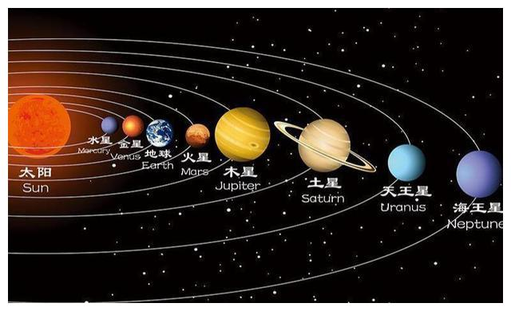

太阳系八大行星
太阳系是以太阳为中心，和所有受到太阳的重力约束天体的集合体。包括八大行星（由离太阳从近到远的顺序：水星、金星、地球、火星、木星、土星、天王星、海王星）。

地球是太阳系中唯一已知存在生命的行星，它美丽而脆弱，需要我们共同保护。
返回主页太阳系是以太阳为中心，和所有受到太阳的重力约束天体的集合体。包括八大行星（由离太阳从近到远的顺序：水星、金星、地球、火星、木星、土星、天王星、海王星）。

地球是太阳系中唯一已知存在生命的行星，它美丽而脆弱，需要我们共同保护。
返回主页